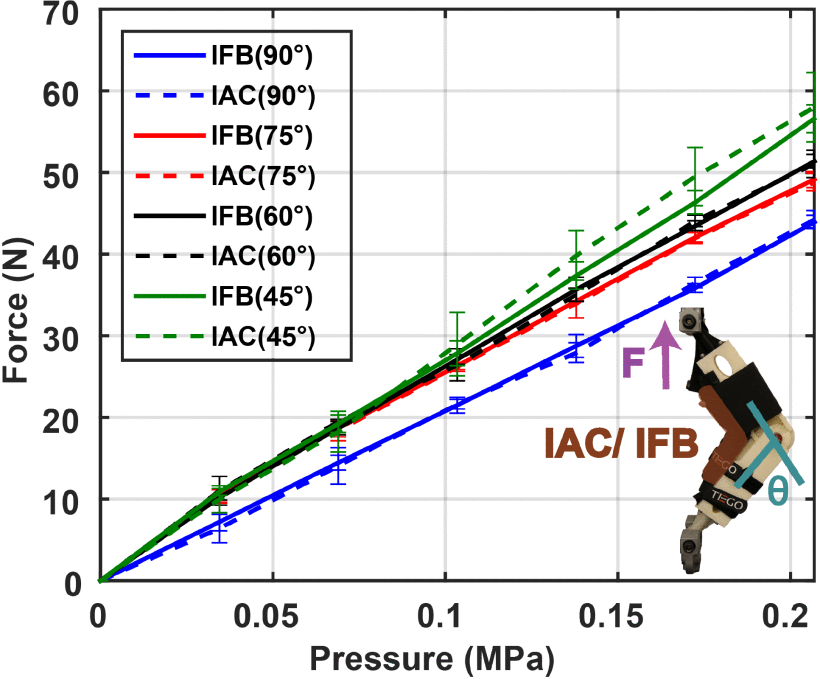
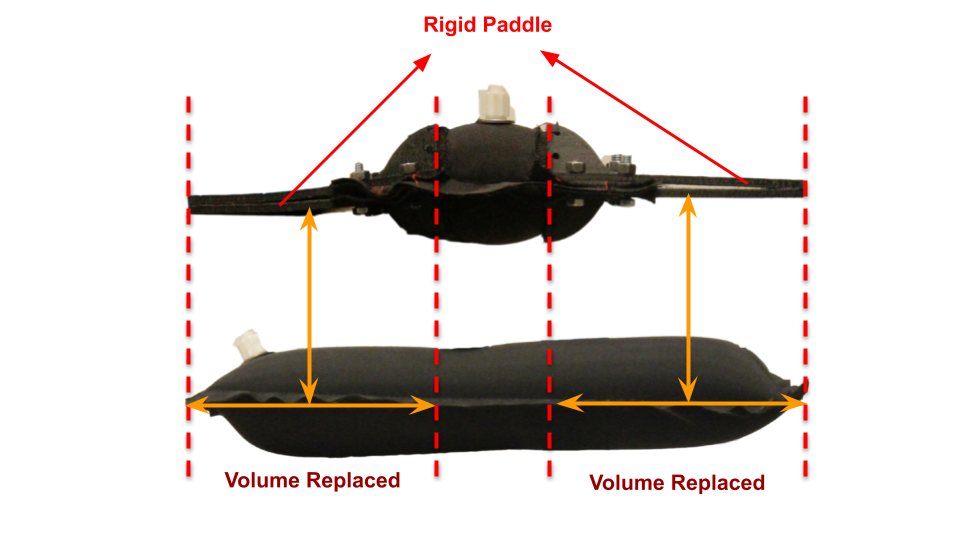
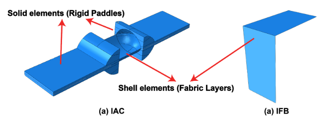
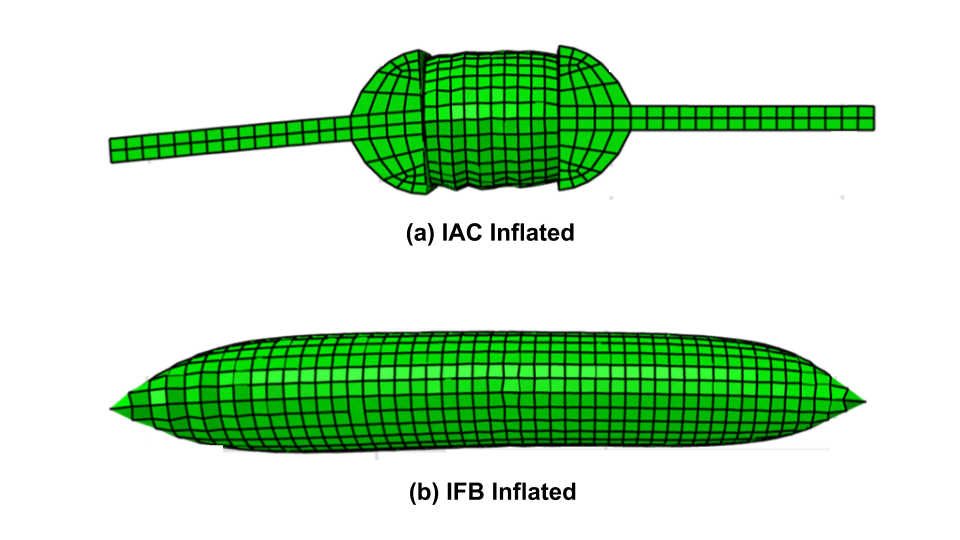
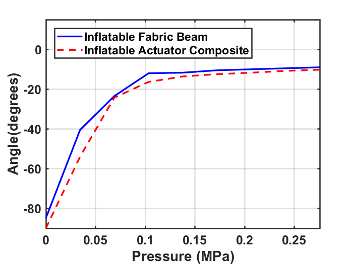
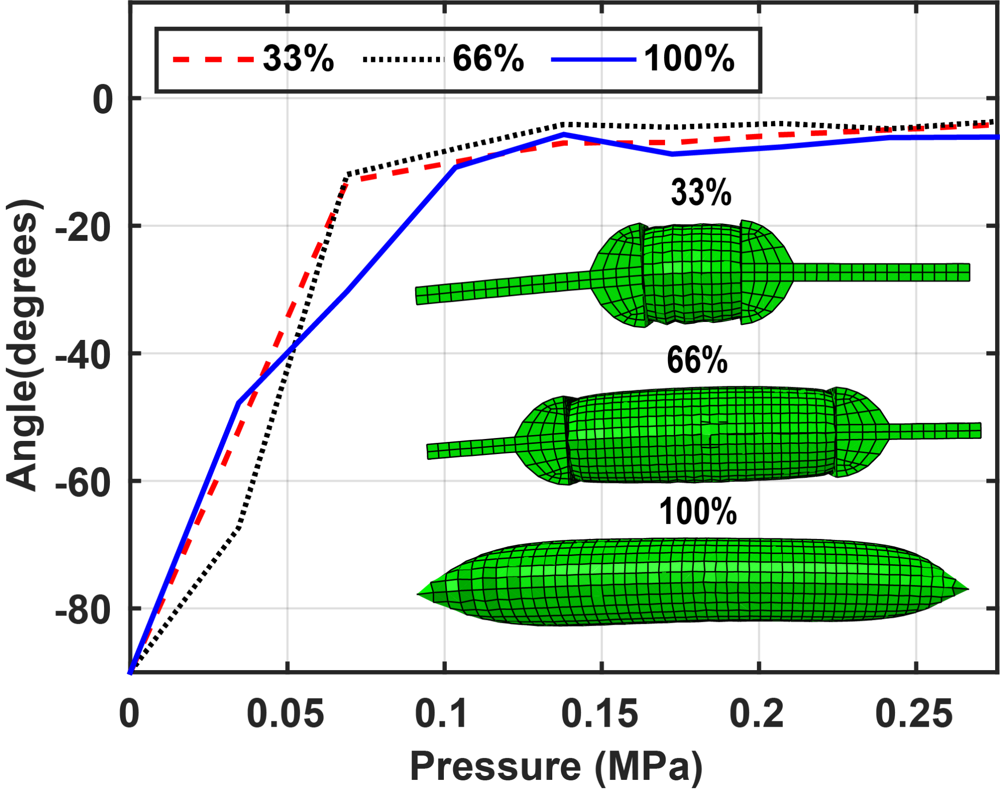

Arizona State University, USA · MS Thesis · Soft Robotics · ABAQUS FEA
FEA and Design Optimization of Inflatable Actuator Composites
Affiliation: Arizona State University, USA
This project modeled and validated low-volume inflatable actuator composites for soft knee-assistance exosuits using finite element analysis and experimental comparison.
Project overview
Fabric-based inflatable actuators can generate useful assistance but often have slow dynamics because of large internal air volume.
Reducing actuator volume while preserving bending performance can make pneumatic soft actuators more practical for wearable systems. This project compared a conventional inflatable fabric beam (IFB) with a low-volume inflatable actuator composite (IAC) that uses rigid paddles to replace part of the inflatable volume.
My contribution
- Performed finite element modeling of inflatable actuator composites and inflatable fabric beams in ABAQUS.
- Modeled TPU and Nylon fabric layers as shell elements and rigid PLA paddles as solid elements.
- Used tie constraints, boundary conditions, pressure loading, and quasi-static dynamic explicit simulations to reproduce the experimental setup.
- Validated FEM results against pressure-deflection experiments and studied different internal volume configurations.
Objectives
- Develop FEM models for the inflatable actuator composite and inflatable fabric beam.
- Validate simulated pressure-deflection behavior against experimental results.
- Evaluate whether internal actuator volume can be reduced without changing bending performance.
- Use simulation to support actuator design optimization.
Results
- FEM results showed good agreement with experimental pressure-deflection data.
- Reported RMSE values were approximately 6.33° for the inflatable actuator composite and 4.63° for the inflatable fabric beam.
- Volume-optimization simulations compared 33%, 66%, and 100% internal volumes.
- The simulations showed similar bending behavior across the different actuator volumes, supporting the low-volume composite approach.
- Force characterization showed comparable output trends between IAC and IFB across multiple actuator angles.
Tools and methods
Selected figures

Force output characterization. Pressure-force curves at 45°, 60°, 75°, and 90° show how actuator output changes with pressure and configuration. The low-volume IAC follows trends comparable to the conventional IFB across the tested postures.

Actuator concept. The inflatable actuator composite replaces part of the inflatable body with rigid paddles, reducing internal air volume while keeping the overall bending function.

Finite element model setup. The IAC model includes rigid paddles represented as solid elements and fabric layers represented as shell elements, while the IFB is modeled as a fabric beam.

Inflated FEM models. Simulated inflated shapes of the IAC and IFB were used to study pressure-deflection behavior under comparable loading conditions.

Experimental pressure-deflection response. Bench-top testing showed similar angle-pressure trends between the IAC and IFB, supporting the feasibility of the low-volume actuator concept.

Model validation. Experimental and simulated curves showed good agreement for both actuator types, demonstrating that the ABAQUS models captured the main pressure-deflection behavior.

Volume optimization study. Simulations of reduced internal volumes showed that the low-volume designs maintained similar bending trends, supporting the goal of faster, more efficient pneumatic actuation.
These are your provided project figures added directly to the FEA project page for the portfolio.